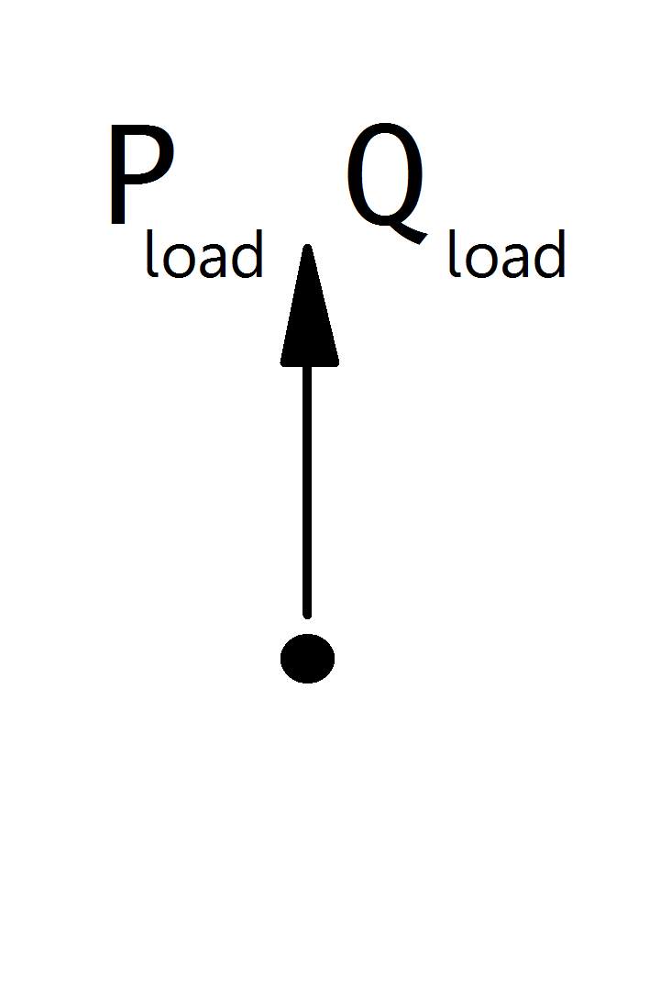

Load¶
See also
Create Function¶
-
pandapower.create_load(net, bus, p_kw, q_kvar=0, sn_kva=nan, name=None, scaling=1.0, index=None, in_service=True, type=None)¶ Adds one load in table net[“load”].
All loads are modelled in the consumer system, meaning load is positive and generation is negative active power. Please pay attention to the correct signing of the reactive power as well.
- INPUT:
net - The net within this load should be created
bus (int) - The bus id to which the load is connected
OPTIONAL:
p_kw (float, default 0) - The real power of the load
q_kvar (float, default 0) - The reactive power of the load
- postive value -> load
- negative value -> generation
sn_kva (float, default None) - Nominal power of the load
name (string, default None) - The name for this load
scaling (float, default 1.) - An OPTIONAL scaling factor to be set customly
type (string, None) - type variable to classify the load
- index (int, None) - Force the specified index. If None, the next highest available index
- is used
in_service (boolean) - True for in_service or False for out of service
OUTPUT:
index (int) - The index of the created elementEXAMPLE:
create_load(net, bus=0, p_kw=10., q_kvar=2.)
Parameters¶
net.load
| Parameter | Datatype | Value Range | Explanation |
| name | string | name of the load | |
| bus * | integer | index of connected bus | |
| p_kw* | float | \(\geq\) 0 | active power of the load [kW] |
| q_kvar* | float | reactive power of the load [kVar] | |
| sn_kva | float | \(>\) 0 | rated power of the load [kVA] |
| scaling * | float | \(\geq\) 0 | scaling factor for active and reactive power |
| in_service* | boolean | “True” - in service
“False” - out of service
|
specifies if the load is in service. Only in service elements are considered during loadflow calculation |
*necessary for executing a loadflow calculation.
Loadflow Model¶
Loads are modelled as PQ-buses in the loadflow calculation:
{kind=link}
The PQ-Values are calculated from the parameter table values as:
Note
Loads should always have a positive p_kw value, since all power values are given in the consumer system. If you want to model constant generation, use a Static Generator (sgen element) instead of a negative load.
Note
The apparent power value sn_kva is provided as additional information for usage in controller or other applications based on panadapower. It is not considered in the loadflow!
Result Parameters¶
net.res_load
| Parameter | Datatype | Explanation |
| p_kw | float | resulting active power demand after scaling [kW] |
| q_kvar | float | resulting reactive power demand after scaling [kVar] |
The power values in the net.res_load table are equivalent to \(P_{load}\) and \(Q_{load}\).